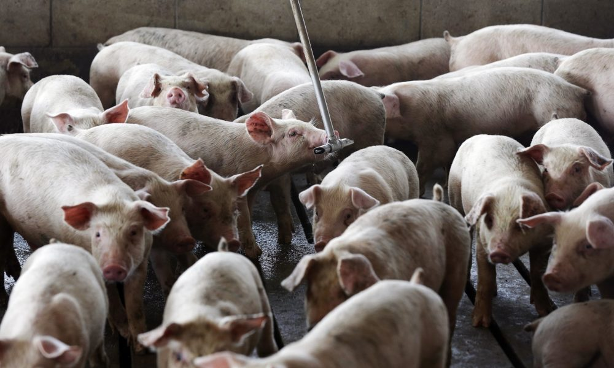
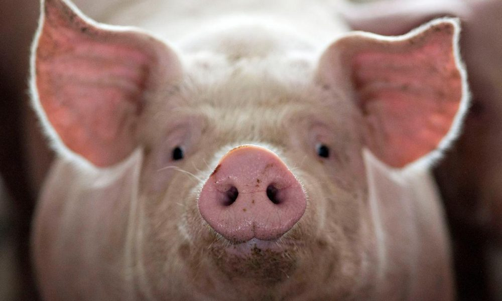

Thông tin về loài lợn

Chi Lợn là các loài động vật ăn tạp, chúng ăn cả thức ăn có nguồn gốc động và thực vật cũng như thức ăn thừa của con người. Trong điều kiện hoang dã, chúng là các động vật chuyên đào bới, tức là luôn dũi đất để tìm kiếm thức ăn. Lợn là động vật rất dễ huấn luyện, vì thế cùng với đặc tính đào bới và khứu giác rất nhạy của chúng nên ở một số nơi người ta còn dùng chúng để tìm nấm, đặc biệt là ở châu Âu. Ngoài ra, người ta còn nuôi heo mọi (một dạng của lợn ỉ Việt Nam) để làm động vật cảnh, đặc biệt là ở Mỹ.

Một đàn lợn con thông thường có từ 6 đến 12 con. Tuy nhiên, trong điều kiện nuôi nhốt, thỉnh thoảng người ta thấy hiện tượng lợn mẹ ăn thịt các con sơ sinh của nó, có lẽ là do thiếu chất. Lợn có 44 răng, mõm và tai lớn, chân có 4 ngón, 2 ngón giữa lớn hơn và có lông cứng. Thời kỳ mang thai của lợn trung bình là 114 ngày.
Lợn không có tuyến bài tiết mồ hôi, vì thế chúng phải tìm các nơi râm mát hay ẩm ướt (các nguồn nước, vũng bùn v.v) để tránh bị quá nóng trong điều kiện thời tiết nóng. Chúng cũng dùng bùn làm lớp bảo vệ để khỏi bị cháy nắng.